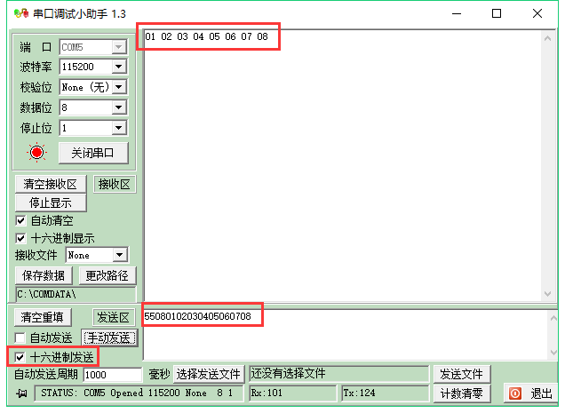

《第十二章》RS485 实验¶
实验Vivado工程为“rs485_test”。
本章以AN3485模块介绍RS485的数据传输。
12.1实验原理¶
前面介绍过UART的实验,RS485是采用差分信号传输,但RS485是半双工传输,也就是说,同一时刻只能有一个方向的数据传输。只有差分信号A和B,而与ARM或FPGA相连的信号为DE(方向选择),DI(输入信号TXD),RO(输出信号RXD)。

从MAX3485文档中,发送方向,如果DE为1时,也就是输出使能,DI值为1时,对于差分信号A和B值为1和0,否则为0和1。

从接收来看,如果DE为0,A和B之间差值大于等于+0.2V,则RO值为1,否则为0。

12.2程序设计¶
由于RS485是半双工传输,那么我们需要制定传输协议进行握手,设定第一个字节为8’h55,表示一帧数据的开始,接下来是传输的数据长度信息,由于FIFO大小限制(256),范围为1~255,接下来是数据。格式即为:起始8’h55+数据长度+数据。 其中uart_tx和uart_rx跟UART实验一样,在这里只修改uart_test即可。我们设计的功能为初始状态下将DE设为0,也就是输入,等待接收上位机发来的数据,并缓存到FIFO中,FIFO大小设置为256,然后切换DE为1,也就是输出,把接收到的数据从FIFO中读出并发送出去。注意缓存的数据是除去起始8’h55和数量信息的。 在RCV_HEAD状态时,判断接收到的数据是否是”S”。

在RCV_COUNT状态时,如果数据长度小于0,则跳转到IDLE状态,如果大于0,则进入接收数据状态。

在RCV_DATA状态下,把数据写入FIFO,并且检查数据长度,切换RS485的方向为输出,并跳转状态。

在切换总线状态时,为了可靠工作,在WAIT状态下,延时1ms进行方向切换。

再然后是发送FIFO中的数据,SEND_WAIT状态是控制读使能信号fifo_rden,并且判断数据是否发送完,发送完后进入IDLE状态。

12.3实验测试¶
我们使用USB转串口设备,通过杜邦线将RS485_1的A和B分别与设备的A和B连接。

打开串口工具,设置好串口号波特率,选择16进制发送,发送数据以8’h55开头,点击发送,即可在接收窗口看到返回的数据。
可以在此基础上,测试另外一路接口。

ZYNQ MPSoC开发平台 FPGA教程 - Alinx官方网站